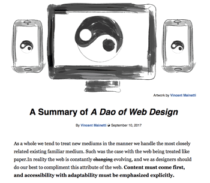
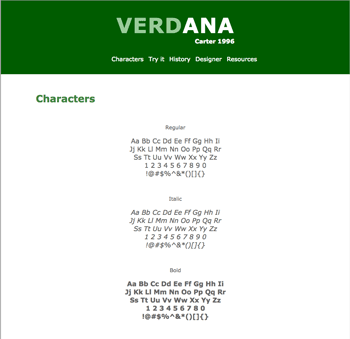
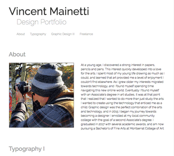

This was the first assignment of the semester, and was the introduction to the language of the web. The assignments main focus was to get students comfortable with some of the terminology of HTML and CSS, and as a class develop a single page website that was designed after an already existing page.
This assignment required the research of a typeface that is considered a web font. After information was gathered about the typeface students were asked to create a one page showcasing the font in a manner that emphasized its purpose when created.
This assignment allowed students to create a one page website on the topic of their choice. Durring the creation of this assignment information about gifs, carouses, slideshows, and various other aesthetic components were given with emphasis on using at least on within the site. Web font kit building was also something that was encouraged for the creation of this page.
